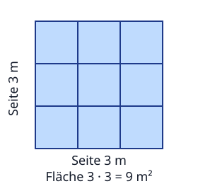
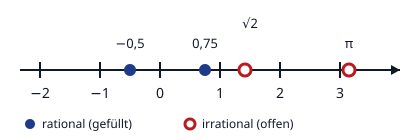
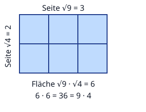
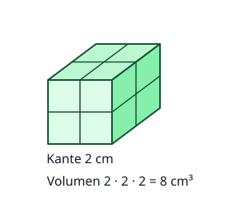

Medienübersicht
Alle Bilder, Audios und Videos dieser App mit ihrer Quelle und ihrer Lizenz.
Bilder

images/quadrat-seite-3.svg© CC-BY-4.0Verwendet auf: Quadratwurzel bestimmen

images/zahlengerade-reell.svg© CC-BY-4.0Verwendet auf: Rationale, irrationale und reelle Zahlen

images/rechteck-wurzeln.svg© CC-BY-4.0Verwendet auf: Wurzelgesetze: Produkt und Quotient

images/wuerfel-kante-2.svg© CC-BY-4.0Verwendet auf: Die dritte Wurzel und n-te Wurzeln